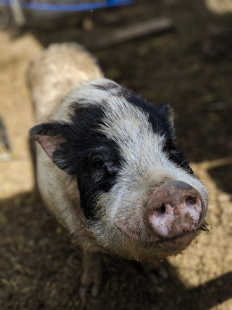
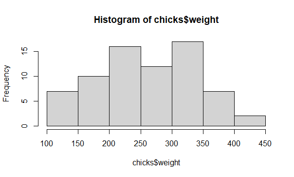
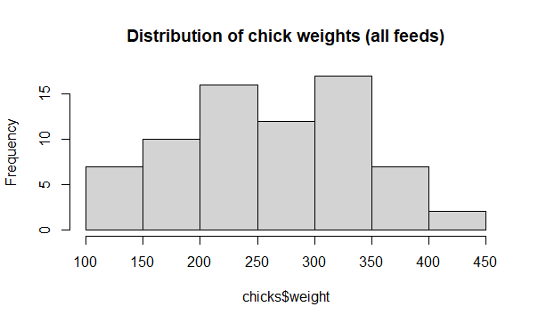
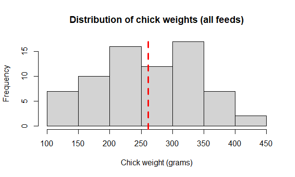
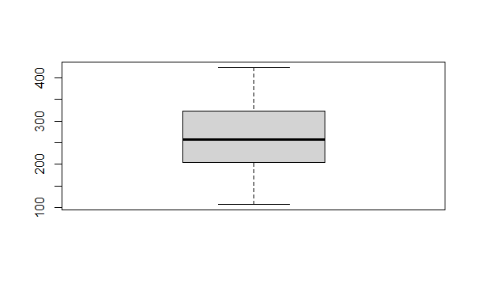
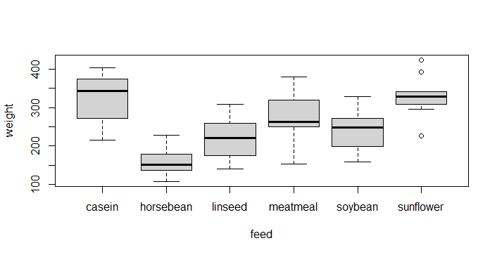

7 Explore data

1 Question, explore, analyze (a workflow for data science)
A dataset often comes to the Data Scientist in an imperfect state, possibly incomplete, containing errors, and with minimal description. Likewise, it may contain wonderful knowledge, there to discover. Either way, your first task is to weigh the pig.
The very first task for any data analysis is to gain an understanding of the data itself. This typically involves examining the variables. Are they as we expect? Do we need to adjust the variable types?
EDA Exploratory Data Analysis
This almost always involves graphing the data, and possibly examining numerical summaries and statistical assumptions. Further, it is necessary to look for errors in the data both trivial (e.g. misspelling factor level names like “control” with an extra space “control”), and more serious errors such as numerical typographical errors (e.g. misplacing a decimal point is a classic: height of 5 men in feet: c(5.5, 5.8, 6.1, 5.9, 52.).
In total, this part of data analysis is sometimes referred to as Exploratory Data Analysis.
EDA is part practical and part philosophical in that is requires skill and experience, but is also subjective. Think of it as a step that might take a long while, where the data scientists decides what the analysis is that will be applied to the data, that the analysis is correct and appropriate. Ironically, while EDA is considered very important and can take a large proportion of the total time spent analyzing data, it is usually only reported on very briefly if at all.
The order of operation for most analyses should be
1 question
2 explore
3 analyse
You choose your data analysis prior to collecting the first data point.
Focus on the question and make sure it is clear in formulation, and choose an analysis approach that can resolve the question , given the data… But the data collection should be DESIGNED to fit the question and chosen analysis prior to collection. Explore the data to examine any assumptions required for the analysis, including the use of graphing and any diagnostic or summary statistics. Finally, perform and summarize the analysis. We will practice this workflow for different basic questions, with an emphasis on simple quantitative data.
1.1 Objectives
Question formulation and hypothesis testing
Summarize: Weighing the Pig
Variables and graphing
“Analysis” versus “EDA”
Statistical Analysis Plan: the concept
Practice exercises
2 Question formulation and hypothesis testing
It is the primary responsibility of the scientist to agree on the specific details of generating evidence from data to answer questions (i.e., statistical analysis). When these roles are occupied by the same person, this matter should be settled before collecting any data.
The general topic of formulating statistical questions is vast; many books have been written on the subject. The tradition and practice of statistical analysis has evolved through time. Here we will focus on the traditional starting point for a “first statistics course”, within the context of Null Hypothesis Significance testing (NHST).
2.1 Sampling concept and NHST
The gambit of NHST is that there is a population of interest but that the population cannot be directly measured because it is too big or otherwise inconvenient or impossible to measure. Thus, experimental samples are drawn randomly from the population, possibly subjected to experimental conditions, and the magnitude of observed differences or measured associations are summarized by various test statistics and compared to how likely such an observed difference or association would be to observe in the absence of the hypothesized effect.
The null hypothesis is the one consistent with no effect or difference. We evaluate whether to reject the null hypothesis using the P-value, the (conditional) probability that the observed effect is unlikely to arise duie to sampling or experimental error.
Traditionally, the P-value is compared to the alpha value, almost always set to 0.05. This alpha value can be interpreted as the maximum probability that is acceptable of making a mistake and concluding there IS a difference, when in fact a difference does not exist. When the P-value is less than 0.05, we conclude there is a difference, rejecting the null hypothesis and “accepting” the hypothesis we predicted was true, usually referred to as the alternative hypothesis.
2.2 NHST notes
Benefits of NHST
Familiar and acceptable to majority of researchers
Typically robust to assumptions when applied correctly
Strong framework for evidence, especially for experiments
The basic idea is objective and simple
Criticism of HNST
Often conceived, applied and interpreted under error
Validation of analysis (e.g. assumptions testing) is often neglected
Education for applied researchers often deficient
Though simple, practitioners may be ignorant of subtle concepts
2.3 Further reading
If the idea is new to you that NHST in statistics is not perfect and you want to get serious about understanding why, like most subjects, you will need to pursue further sources.
3 Summarize: Weighing the Pig
The best way gain skill in handling data is to practice.
Weighing the pig is the term we use to describe creating a summary-at-a-glance of a dataset. Usually this includes graphics and statistical summary, as well a description of how much data we have. A key consideration is, also, the specification of the variables.
We will practice data handling with the data file chickwts.xlsx.
Download the file, read it into a data object in R called chicks, and convert the feed variable to a factor if necessary.
# Try this:
# Download the 7-chickwts.xlsx file, read it into a data
# object in R called "chicks",
# and convert the "feed" variable to a factor if necessary.
# Do not neglect looking inside the "raw" data file
# Is it as you expect? Is the data dictionary present and clear?
# Load necessary libraries
library(openxlsx)
# Read file
setwd("D:/Dropbox/git/DSgarage/public/data") # NB change to YOUR file path...
chicks <- read.xlsx("7-chickwts.xlsx")
# Convert feed to factor if needed
class(chicks$feed) # Character
chicks$feed <- factor(chicks$feed)
class(chicks$feed) # Factor3.1 Chick data
The hypothesis voices “how you think the world works” or what you predict to be true”
The hypothesis we believe is true for the chicks dataset might be phrased in different ways.
Chick weight differs after 6 weeks according to feed additive type
Mean chick weight varies according to feed additive type
The variance between chick weight for different feed additives is bigger than the variance within chick weight as a whole
3.2 Hypothesis
The minimum amount of information we are usually interested in when sizing up a dataset is How much data is there?, What is the central tendency (e.g. the mean, variance, etc.)?, and possibly Are there rare values?.
We would typically start graphing the data right away. If we have a notion of what our questions or hypotheses are, they should inform the initial peek at the data. For example, in the chickwts data, we know our question will be related not to the overall central tendency of chick weight, but to chick weight for each individual feed type.
We do not approach this sizing up of the data in a workhorse fashion, merely to check a tick box. We are looking quickly for details in the data that give us insight into what the data is like. For example, we peek at whether the mean and median are close to each other (indicator our data may be Gaussian), we compare the standard deviation, variance or standard error of a numeric variable relative to different levels of a factor, to see if they are similar.
# Try this:
# Summarize the whole dataset
# summary() provides summary statistics for numeric variables and counts
summary(chicks)
# we might want to look at summary for different levels of feed
?summary
summary(object = chicks$weight[which(chicks$feed == "casein")])
summary(object = chicks$weight[which(chicks$feed == "horsebean")])
# etc. - this method is easy but inelegant?
# aggregate()
?aggregate
# mean
aggregate(x = chicks$weight, by = list(chicks$feed), FUN = mean)
# standard deviation
aggregate(x = chicks$weight, by = list(chicks$feed), FUN = sd)
# You can make your own function for the FUN argument
# stadard error of mean, SEM = standard deviation / square root of sample size
aggregate(x = chicks$weight, by = list(chicks$feed),
FUN = function(x){ sd(x)/sqrt(length(x)) })
# You can apply several functions and name them!
aggregate(x = chicks$weight, by = list(feed = chicks$feed),
FUN = function(x){ c(mean = mean(x),
sd = sd(x),
SEM = sd(x)/sqrt(length(x)))})4 Variables and graphing
A good graph usually tells the whole story, but a bad graph is worse than no graph at all.

There are a few topics in graphing data that are important to consider here, but the topic is wide and deep, analytical, creative, and even artistic. We make a distinction between graphs used to explore data during EDA (meant to be “consumed” only by the data scientist who made them and are of no use to document a pattern to others) and graphs intended to constitute evidence.
4.1 Scientific graphs
A few graphing principles:
Must convey the relevant information
Should be consistent in aesthetics
Must be self-contained (meaning is contained 100% within the figure and legend)
Should reflect a hypothesis or statistical concept (if not purely descriptive)
Should be appropriate to the data
You can think of R graphics as a way to “build up information in layers” onto a graph. There are many aesthetic features of graph that can be controlled, like adding colors, text, lines, legends, etc. The R graphics system is very simple to use, but can also be very powerful (mastering this takes practice). We make a distinction here between R base graphics and packages that can be used to make specialized and varied graphs (like the powerful and popular package {ggplot})
4.2 Layering information
We can look at graphing the chicks data in a few different ways. We will try a few different graphs in this way, building up features. We might build up features on a graph using arguments in a particular graph function.
Like, adding
a main title with the argument
mainthe x axis title with the argument
xlabadding lines with the functions
abline()orlines()
4.3 Types of graphs
Typically you would choose the type of graph that both fits the type of data you have and that conveys the information you wish to examine or showcase. E.g., for a single numeric variable, you might wish to show:
The distribution of data with a histogram:
hist()The central tendency relative to a factor with a boxplot:
boxplot()
Histogram of the chicks data
# The least you can do
help(hist)
hist(x = chicks$weight)
Add a title with main
# Argument main
hist(x = chicks$weight,
main = "Distribution of chick weights (all feeds)")
Add an x axis title with xlab
# x axis title
hist(x = chicks$weight,
main = "Distribution of chick weights (all feeds)",
xlab = "Chick weight (grams)")
Add a vertical line for the weight mean with abline()
# Add vertical line for mean weight
hist(x = chicks$weight,
main = "Distribution of chick weights (all feeds)",
xlab = "Chick weight (grams)")
help(abline)
abline(v = mean(chicks$weight), col = "red", lty = 2, lwd = 3)
# Try a boxplot
help(boxplot)
boxplot(x = chicks$weight)
# I have seen worse graphs, but I can't remember when.
# Flash challenge: Improve the graph
# weight as a function of feed
boxplot(formula = weight ~ feed,
data = chicks)
# This is probably a good representation of our hypothesis
# Flash challenge: Improve the graph...
5 “Analysis” versus “EDA”
Although you could consider Exploratory Data Analysis, EDA, an important part of the complete process of data analysis, we might make a distinction between “Analysis” the part of analysis that generates Evidence, and that of EDA which is used to explore data and test assumptions.
5.1 Analysis
A data analysis is
Designed to fit a specific question or hypothesis
Part of a workflow: Informal hypothesis statement (in plain language) > Statistical hypothesis (specifies a or implies a statistical test) > Evidence (the specific results)
Designed and usually formatted to present to others, such as in a report or a scientific manuscript
Contains only bare essentials as relates to the initial hypothesis (e.g. a good graph, the summary of a statistical analysis)
Should strictly be reproducible via a script and archived data
Done in conjunction with EDA
5.2 EDA
Exploratory data analysis is
Informal and may be haphazard
Designed to explore or gain understanding of data
Assumptions testing
Usually not designed to document or show to others
Occurs primarily before (every) analysis
May or may not be documented to be reproducible
Done before the final, evidence-generating Analysis
We can keep this concept of EDA versus Analysis in our mind while we discuss the Statistical Analysis Plan.
6 Statistical Analysis Plan: the concept
I have a cunning (statistical analysis) plan -Baldrick
A Statistical Analysis Plan (SAP) is a formal document that should be used to design data analysis. One of the most important functions of the SAP is to make a formal connection between the hypothesis, the data collected and and the method of analysis that will be used to generate evidence to support or refute the hypothesis. This is conducted before any data are collected.
The components of a basic SAP are:
The hypotheses stated in plain language
Each hypothesis translated into a specific statistical model
Specification of data and and data collection methods
-) Specification of effect size
- Justification of sample size through power analysis or other means
Definition of all of these components is beyond the boundaries of this Bootcamp, however the explicit connection of hypotheses with a statistical model is one of the very basic elements of best practice in science.
6.1 The scientific method, Classic version
We usually learn the scientific method as a cycle where we conceive a problem, form a hypothesis, conduct an experiment, evaluate the result and so on. We learn and teach this as a literal cycle.

This classic view of the scientific process implies that we plan the analysis only after we conduct the experiment and collect data. While many data scientists or statisticians would agree that this model is widely used in science, it is considered very poor practice for several reasons.
The expected difference or relationship (i.e., the effect size) should explicitly be part of the hypothesis and quantified BEFORE collecting data
The statistical test must be chosen prior to collect the data to insure the evidence matches the expectation
The sample size should be justified, using power analysis or a less formal means. Collecting too little data will likely result in failing to detect a difference (even if your hypothesis is correct!); Collecting too much data is simply a waste of resources.

6.2 Best practice scientific method
The traditional view of the scientific method should probably be adjusted to explicitly accommodate planning the analysis at the same time as the hypothesis formulation stage. Likewise, the analysis plan should specifically influence the design of the data collection for the experiment.

A modern view of best practice of scientific endeavor includes an experimental design phase, with consideration of effect size and power analysis, and the production of a statistical analysis plan that contains a formal statistical hypothesis. All off this happens prior to any data collection.
7 Practice exercises
For the following questions, use the field-trial.xlsx dataset.
This is real data in Tidy Data format, but our information for these exercises is limited precisely to the contents of the file, including the data dictionary. In this experiment, seeds were raised under field trial conditions for two weeks to look at the effect of different treatment conditions on mass of gain during germination. There are several measured variables, with the calculated pct variable probably intended to be the dependent variable, with the factor treatment being the main explanatory variable for variation in pct.
7.1
Show code to set up an R analysis file with a header, table of contents, and a setup section that sets your working directory, loads any required libraries and reads in the data. Call the data.frame object you create seed.
7.2
pct,wetanddryshould be numericblockandtrialshould be factorstreatmentshould be a factor with the level “Control” set as the reference.
Show the code to do this.
7.3
Use aggregate() to calculate the mean, standard deviation, standard error, and the count (e.g. length()) of pct for each level of treatment. Show the code.
7.4
Make a fully labelled boxplot of the pct variable as a function of treatment. Add a horizontal line (red and dashed) for the overall mean of pct, and two horizontal lines (gray, dotted) for the overall mean of pct +/- 1 standard deviation.
7.5
(hard: may require tinkering and problem solving)
Experiment making a boxplot showing pct ~ treatment separated for each trial
7.6
Write a plausible practice question involving aggregate() and boxplot() in-built R dataset iris.
Harper Adams Data Science

This website supports students and staff at Harper Adams University and the MSc in Data Science for Global Agriculture, Food, and Environment led by Ed Harris.